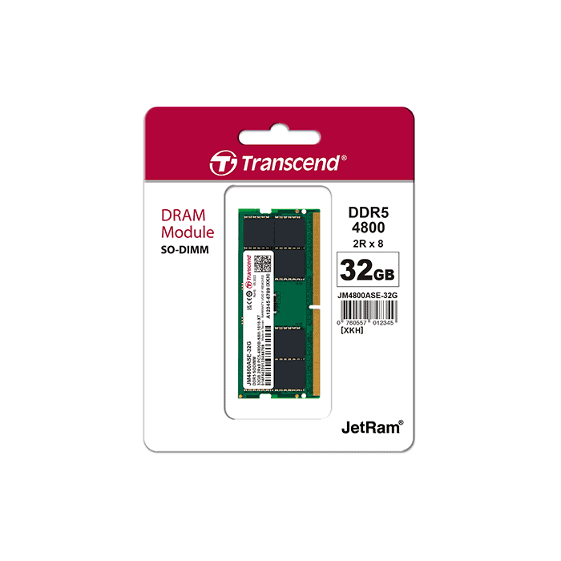
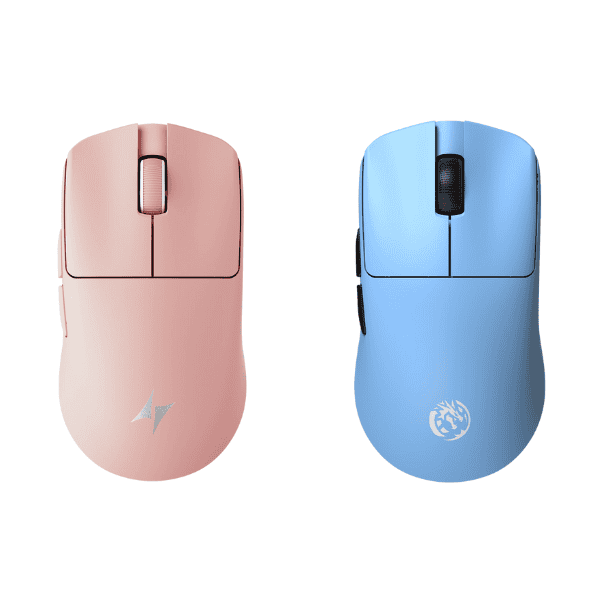

Transcend Computer Memory Size: 32 GB RAM Memory Technology: DRAM Memory Speed: 4800 MHz Compatible Devices: Laptop
Transcend 32GB DDR5 4800MHz RAM CL40 (2Rx8) Laptop Memory
NRs. 16,249Reference price

LAPTOP ACCESSORIES · Logitech Connectivity Technology: Radio Frequency, USB, Wi-Fi Special Features: Lightweight, Portable, Rechargeable, Wireless Movement Detection Technology: Optical
Logitech MX Master 3S Wireless Mouse
Complete your laptop setup. Compatibility is model-specific: check dimensions, memory format, ports, power, and fit before purchase.
Availability and final price: confirm with Eakraj
A CLOSER LOOK
Price, feature, and photo source: View the retailer’s original listing ↗. Representative photo; confirm the exact colour, variant, included accessories, and specifications. Published battery or performance figures are source claims, not Eakraj measurements.
This is an enquiry catalog, not a live stock feed. Call or WhatsApp 9707293923 to confirm availability and the final selling price.
Complete your laptop setup. Compatibility is model-specific: check dimensions, memory format, ports, power, and fit before purchase. Send your device model and requirements to the shop before ordering.
Warranty and box contents vary by seller and exact unit. Confirm local coverage, taxes, and included accessories with Eakraj.


